Exposiciones
VaCa Marquetry ha expuesto en Italia y en Dubái, presentando retratos originales de marquetería en chapa de madera a coleccionistas e instituciones de dos continentes. Este es el registro completo de sus exposiciones.
World Art Dubai
Marzo de 2024 — Exposición internacional de arte contemporáneo y bellas artes, Dubai World Trade Centre. VaCa Marquetry presentó retratos originales de marquetería junto a artistas de toda Europa y del Golfo.
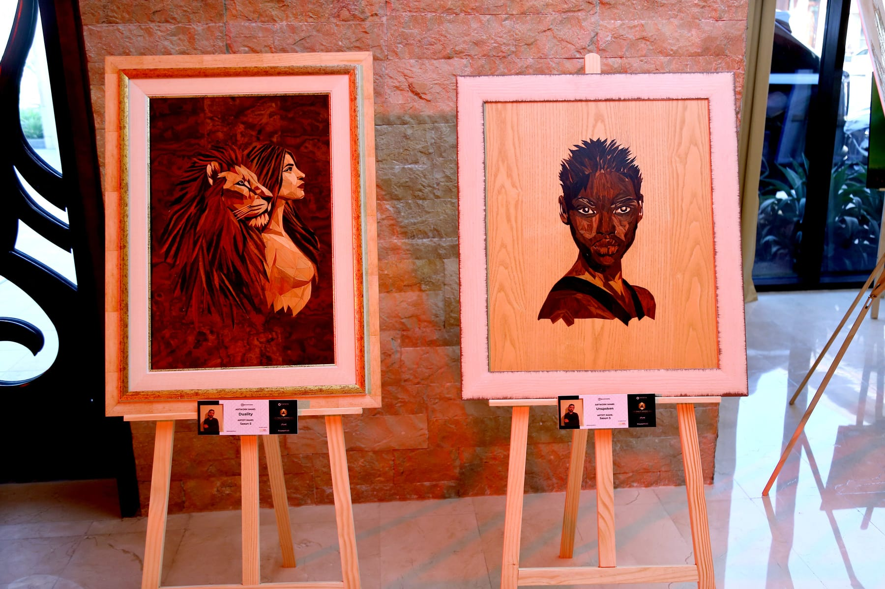


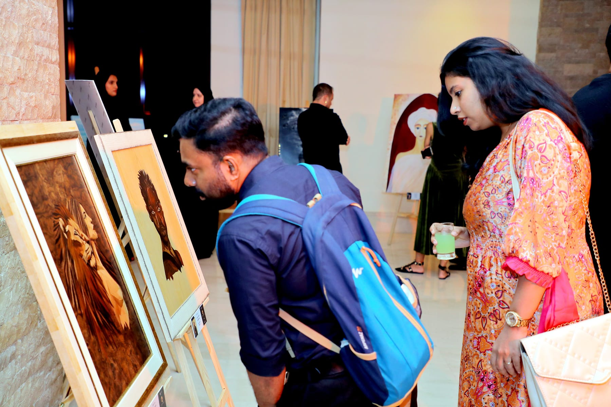
Chiesa di Santa Caterina
Lucca, Italia — Retratos originales de marquetería en chapa de madera presentados en la histórica Chiesa di Santa Caterina de Lucca. Un momento clave en el desarrollo de VaCa Marquetry como práctica artística profesional: la obra expuesta en un espacio que comprendía el peso del oficio.
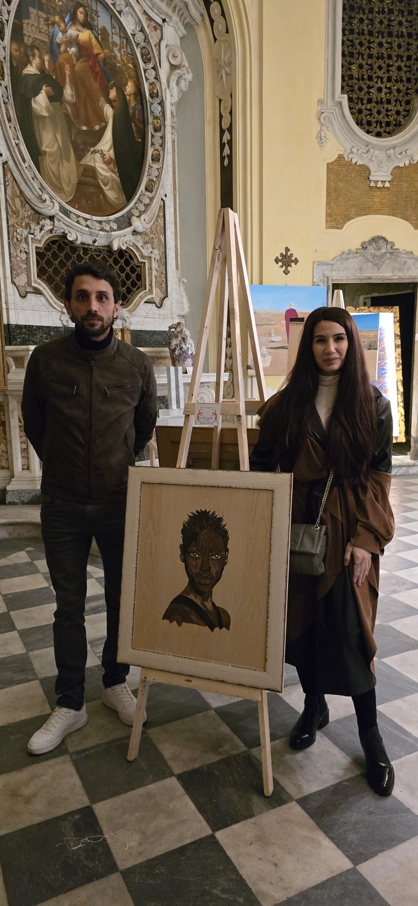
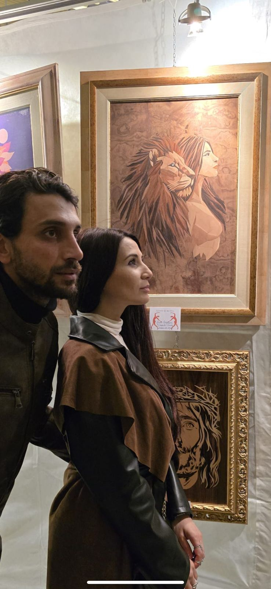
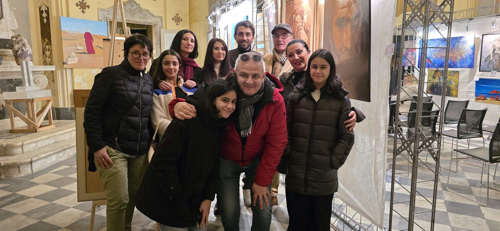
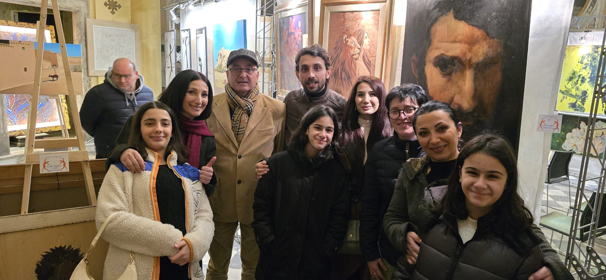
Gesù
Pala Todisco, San Giuliano Terme, Italia — No tallado en piedra, sino en el tiempo. Una presentación simbólica de la forma sagrada expresada a través del oficio de la marquetería. La chapa de madera como materia de devoción: cada pieza colocada con la precisión de toda una vida de práctica.

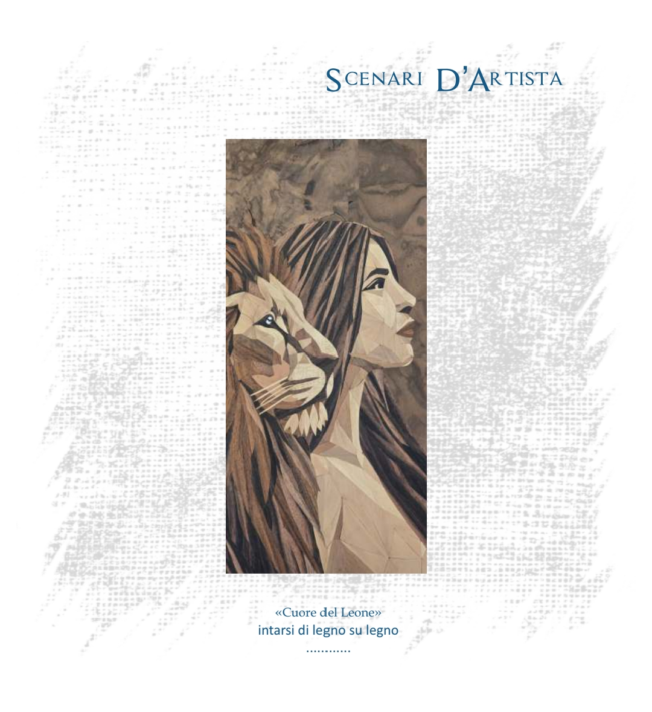
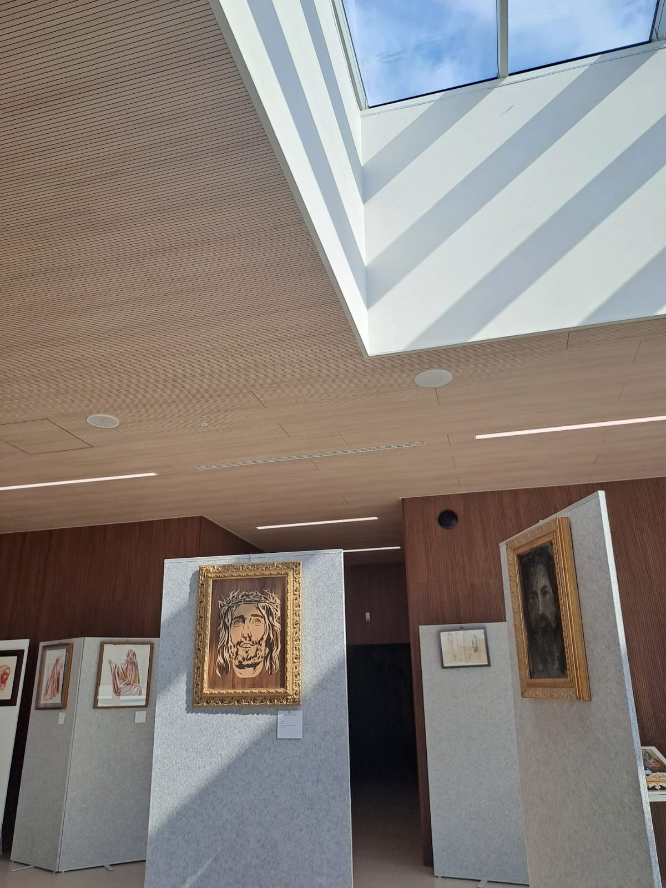
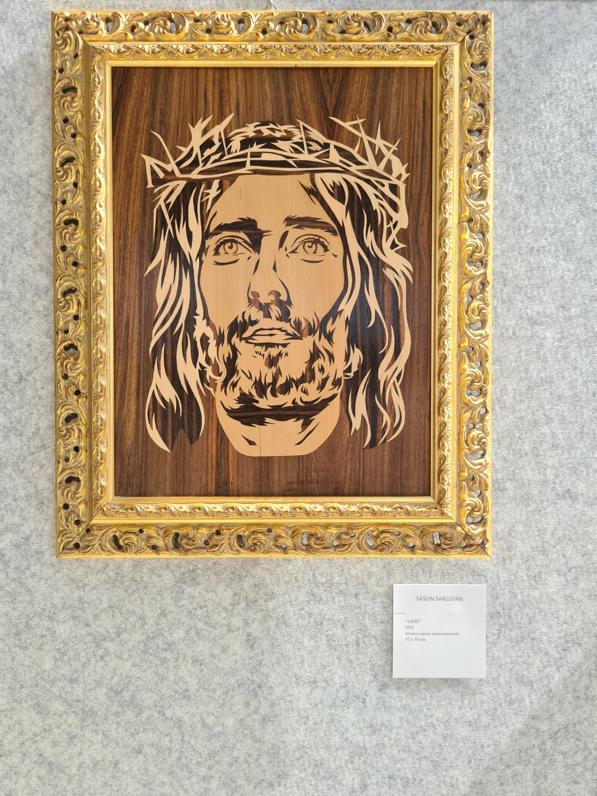
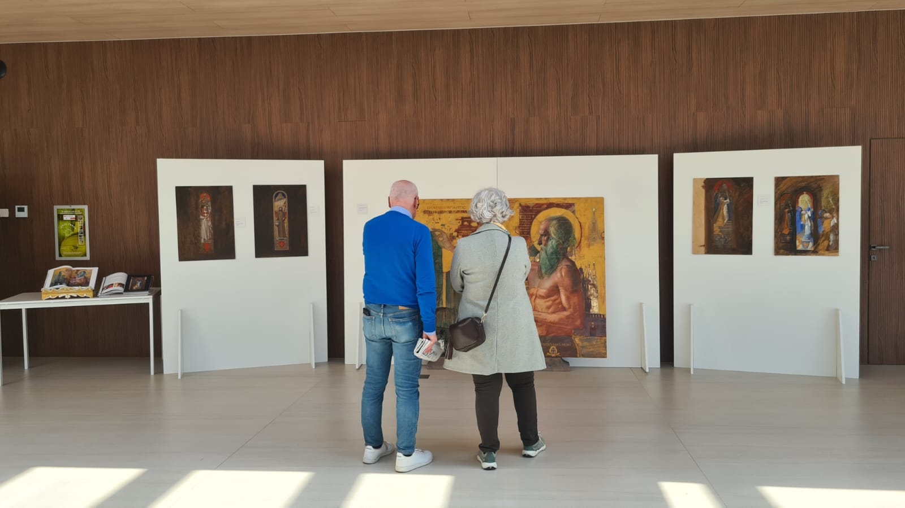
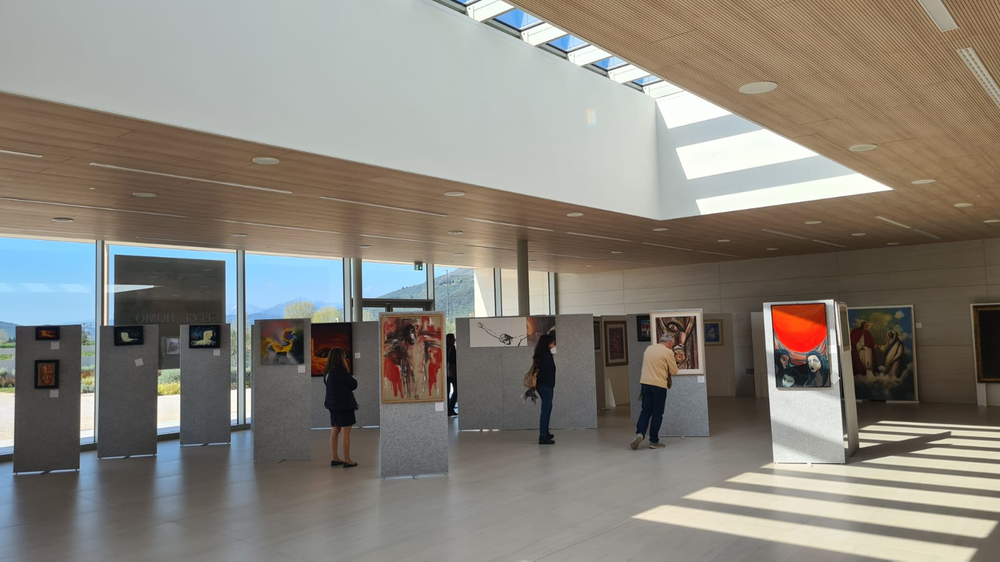
Premios y certificados
Reconocimiento formal recibido por la calidad y la originalidad de la obra presentada en exposición.

Certificado de reconocimiento
Concedido en reconocimiento de la calidad y la originalidad de los retratos de marquetería en chapa de madera presentados en la exposición de San Giuliano Terme: el primer reconocimiento formal de VaCa Marquetry como una práctica artística singular.
Encargue una obra original
Cada encargo empieza con una conversación privada y una vista previa de cortesía de su retrato, preparada en 24 horas.
Empezar un retrato a medida